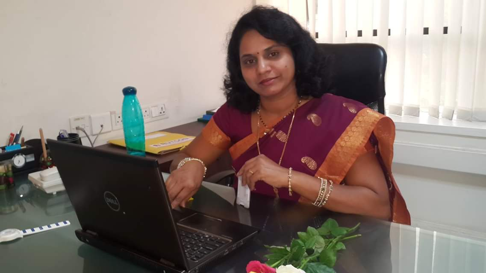

<div class="row wrapper">
  <div class="col-xs-12 col-sm-12 col-md-12 col-lg-12">
    <div class="innerWrapper">
      <h3 class="text-center">MANAGEMENT</h3>
      <hr>
      <div class="row">
        <div class="text-center col-12 col-xs-12 col-sm-12 col-md-4 col-lg-4">
          
        </div>
        <div class="col-12 col-xs-12 col-sm-12 col-md-8 col-lg-8">
          <h4 style="color: brown">Mr. Anil Hinge, <span style="font-size: 16px; color: burlywood">MANAGING DIRECTOR</span></h4>
          <p class="NoMargin">With a Bachelor degree in Civil Engineering from Pune University, Mr. Anil Hinge has a vast experience of more than 24 years in the field of Residential, Commercial, Institutional and Industrial Construction including Infrastructure Development.</p>
          <p class="NoMargin">Based on the core values of transparency and integrity, Mr. Anil has successfully managed more than 75 Industrial as well as Infrastructure projects as ‘Landmarks’ during his career.
          </p>
          <p class="NoMargin">He is a good team leader and extra ordinary motivator. Mr. Anil has developed his own practical techniques for successful completion of challenging projects with effective cost control, excellent work quality and perfect time management.</p>
          <p class="NoMargin">He has always being a successful personality to bring valuable technical expertise to the team and enriching his subordinates. He has a strong belief that the Team Members are the main assets of RASS Project Consultants Pvt. Ltd.</p>
        </div>
      </div>
      <hr>
      <div class="row" style="margin-top: 15px;">
        <div class="col-12 col-xs-12 col-sm-12 col-md-8 col-lg-8">
          <h4 style="color: brown">MS. SHAILA HINGE, <span style="font-size: 16px; color: burlywood">DIRECTOR</span></h4>
          <p>After completion of Graduation, Ms. Shaila is taking care of all the administrative, purchase and support functions of the company. She has always been a pillar and support in company’s growth.</p>

          <p>Ms. Shaila ensures smooth operation of company and has passionate driving and outstanding people management skills. She is also an expert Yoga Teacher.</p>
        </div>
        <div class="text-center col-12 col-xs-12 col-sm-12 col-md-4 col-lg-4">
          
        </div>
      </div>
      <hr>
    </div>
  </div>
</div>